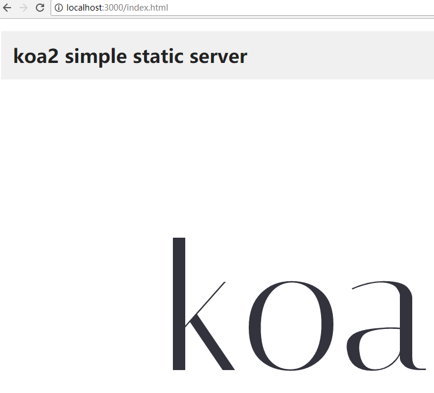
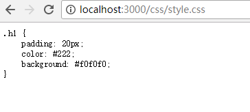

koa-static中间件使用
使用例子
demo源码
https://github.com/findwisdom/koa2-note/tree/master/demo/static-use-middleware
const Koa = require('koa')
const path = require('path')
const static = require('koa-static')
const app = new Koa()
// 静态资源目录对于相对入口文件index.js的路径
const staticPath = './static'
app.use(static(
path.join( __dirname, staticPath)
))
app.use( async ( ctx ) => {
ctx.body = 'hello world'
})
app.listen(3000, () => {
console.log('[demo] static-use-middleware is starting at port 3000')
})
效果
访问http://localhost:3000

访问http://localhost:3000/index.html
访问http://localhost:3000/css/style.css
